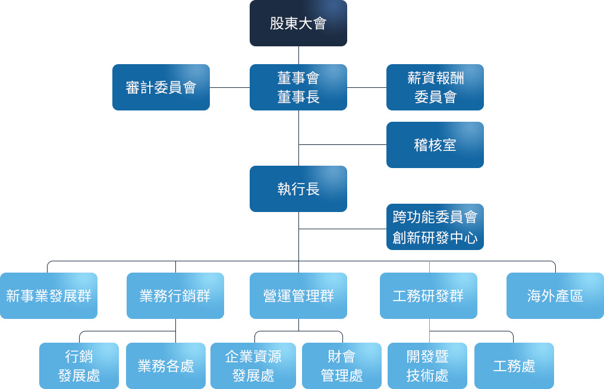

執行長室本部
| 單位職掌 | 職稱 | 經理人 | 學經歷簡介 |
|---|---|---|---|
| 綜理經營策略及長程發展之規劃。 本公司集團內事業體整合發展之策略訂定與規劃。 | 執行長 | 周理平 | 成功大學工管系 福星製衣廠股份有限公司 |
| 強化客戶高層關係經營及相關合作發展方案協商與推動。公司發言人。 | 資深經理 | 林恆宇 | 標準服裝股份有限公司總經理 新加坡南洋理工大學電機工程學系 |
稽核室
| 單位職掌 | 職稱 | 經理人 | 學經歷簡介 |
|---|---|---|---|
| 查核、評估各種作業程序內部控制措施是否適當、健全及有效實施。 檢查及評估本公司規章、制度之內部控制，適時提供改善建議，發揮自我控制之功能。 | 經理 | 葉辰涓 | 東吳大學會計系 敬興聯合會計師事務所查帳領組 力世證券（股）承銷部襄理 |
行銷發展處
| 單位職掌 | 職稱 | 經理人 | 學經歷簡介 |
|---|---|---|---|
| 負責行銷、商品開發、材質開發、供應鏈整合等業務推動與運作管理。 | 處總經理 | 黃渝晴 | 台北大學企業管理學系碩士 遠東紡織業務 |
業務各處
| 單位職掌 | 職稱 | 經理人 | 學經歷簡介 |
|---|---|---|---|
| 訂單開發規劃。 訂單接單：銷售符合公司最佳經濟效益之產品。 訂單管理：服務客戶窗口、產品 R&D 整合。 客戶服務：客戶資料的建檔與維護及抱怨處理。 | 處總經理 | 宋佩芳 | Bridgeport University |
| 協理 | 林以欣 | University of California, Berkeley | |
| 處副總經理 | 賴秀慧 | 淡江大學銀行保險學系 德式馬公司 | |
| 處副總經理 | 廖墨谷 | 德明商專國際貿易系 台雅國際（股）公司 | |
| 協理 | 賴曉瑄 | 輔仁大學織品服裝系 | |
| 處副總經理 | 蒲麗玉 | 中興大學企業管理學系 福星製衣廠（股）公司 | |
| 協理 | 郭良祿 | 政治大學阿拉伯語文學系 |
開發暨技術處
| 單位職掌 | 職稱 | 經理人 | 學經歷簡介 |
|---|---|---|---|
| 綜理技術研發、技術設計、特工研發等管理業務。
負責技術研發、技術設計、特工研發等業務推動運作管理。 |
資深處總經理 | 陳國隆（兼） | 清華大學工業工程系 德式馬公司工務主管 |
| 處總經理 | 陳淑瑩 | 銘傳大學管理研究所碩士 世運製衣股份有限公司 |
工務處
| 單位職掌 | 職稱 | 經理人 | 學經歷簡介 |
|---|---|---|---|
| 綜理工務處各部門管理業務。 負責工務處各部門管理事項推動與運作管理。 | 資深處總經理 | 陳國隆 | 清華大學工業工程系 德式馬公司工務主管 |
| 處總經理 | 陳淑瑩 | 銘傳大學管理研究所碩士 世運製衣股份有限公司 |
創新研發中心
| 單位職掌 | 職稱 | 經理人 | 學經歷簡介 |
|---|---|---|---|
| 負責公司未來創新技術開發與整合應用。 | 執行長 | 周理平（兼） | 成功大學工管系 福星製衣廠股份有限公司 標準服裝股份有限公司總經理 |
財會管理處
| 部門 | 單位職掌 | 職稱 | 經理人 | 學經歷簡介 |
|---|---|---|---|---|
| 財會管理處 | 負責會計、股務暨專案組、財務業務推動與管理。 國內法人發言人代理。 | 處副總經理 | 溫玉岑 | University of California, Irvine, MBA 大華證券（股）承銷部資深經理 |
| 財務部 | 掌握全球金融經濟脈動、健全財務結構並應用適當財務工具，強化財務相關風險管理。 財務結構整體規劃，公司財務目標、策略及長短期計畫之研訂與分析。 深化銀行關係，取得充裕資金、合理成本，發揮國際化財務功能。 穩健並有效的管理公司資金，並適時提供決策者管理資訊。 | 處副總經理 | 溫玉岑（兼） | University of California, Irvine, MBA 大華證券（股）承銷部資深經理 |
| 會計部 | 掌握全球金融經濟脈動、健全財務結構並應用適當財務工具，強化財務相關風險管理。 提供經營分析數據，協助管理當局有效決策判斷。 全球稅務風險管理、投資架構及租稅規劃。 年度預算及計劃之編列、審核業務。 會計制度建立與執行、帳務及稅務處理、及其他依法令規定辦理公告事項。 | 協理 | 林育欣 | Drexel University, MBA 元富證券（股）公司風險控管 寶泰投信內部稽核 |
| 股務暨專案組 | 股務事項及投資人關係維護，增加股東對公司之向心力，提升公司形象。 處內跨部門專案規劃與整合。 | 處副總經理 | 溫玉岑（兼） | University of California, Irvine, MBA 大華證券（股）承銷部資深經理 |
企業資源發展處
| 單位職掌 | 職稱 | 經理人 | 學經歷簡介 |
|---|---|---|---|
| 負責資訊、人力資源、營運、法務等業務推動與運作管理。 | 處副總經理 | 黃渝晴 | 台北大學企業管理學系碩士 遠東紡織業務 |
海外產區
| 部門 | 單位職掌 | 職稱 | 經理人 | 學經歷簡介 |
|---|---|---|---|---|
| 北越產區 南越產區 | 配合總公司策略目標，負責擬定海外子公司之經營方針及統籌相關營運活動（生產製造、製程技術及財務管理）之管理與發展。 | 資深處副總經理 | 陳國隆（兼） | 清華大學工業工程系 德式馬公司工務主管 |
| 北越產區 | 副總經理 | 蔡宏麟 | 台灣大學大氣科學系碩士 | |
| 南越產區 | 副總經理 | 周心鵬 | University of Washington 電機工程系碩士 | |
| 印尼產區 | 執行總顧問 | 宋光漢 | 成功大學工管碩士 General Manager of PT. Rajabrana Vice General Manager of Maruwa Clothing Mfg. Co. | |
| 代理產區總經理 | 王安妮 | 北京商學院（大學）會計系 PT. TUNYUN GARMENT INDONESIA 生管經理 | ||
| 資深協理 | 許皓白 | 台灣大學國企所碩士 | ||
| 柬埔寨產區 | 資深處總經理 | 陳國隆（兼） | 清華大學工業工程系 德式馬公司工務主管 | |
| 菲律賓產區 | 資深處總經理 | 陳國隆（兼） | 清華大學工業工程系 德式馬公司工務主管 | |
| 中國產區 | 資深處總經理 | 陳國隆（兼） | 清華大學工業工程系 德式馬公司工務主管 |
新事業發展
| 部門 | 單位職掌 | 職稱 | 經理人 | 學經歷簡介 |
|---|---|---|---|---|
| 布廠發展 | 布廠營運管理。 | 處總經理 | 黃宏仁 | 中原大學工業工程系標準服裝（股）公司廠長 |